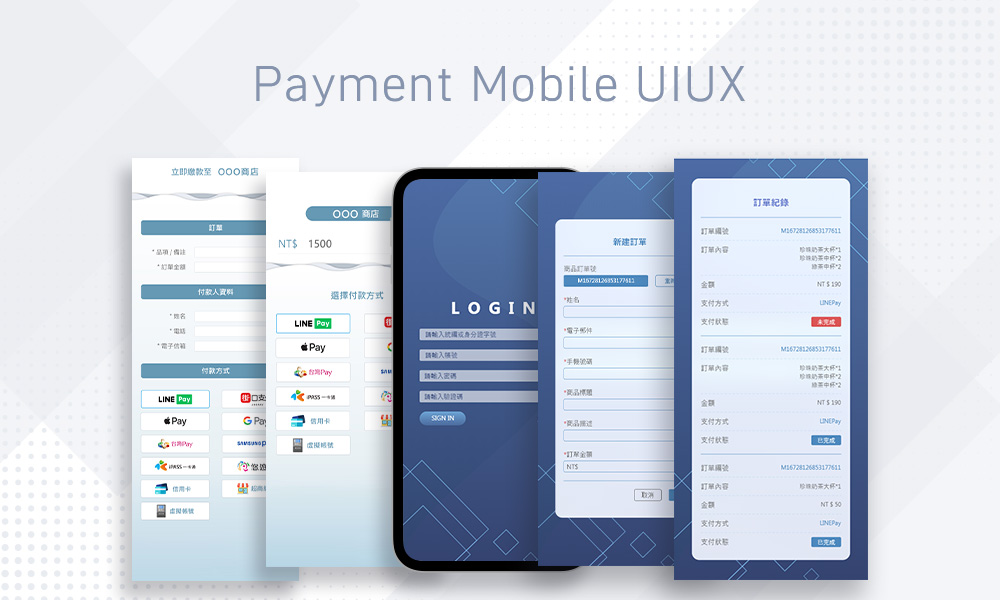
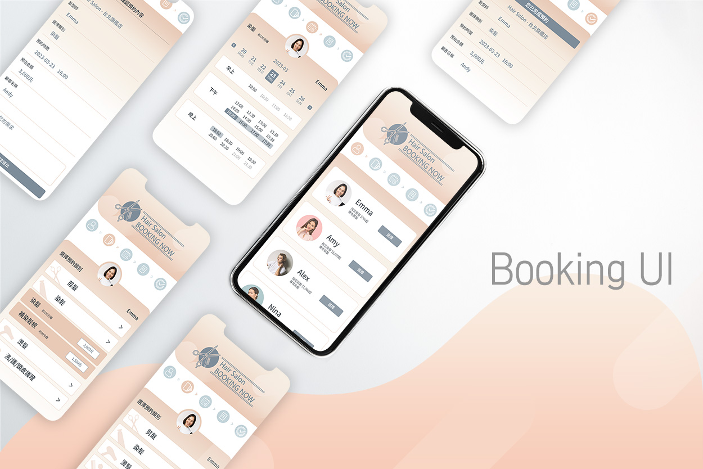

Mobile UIUX

付款系統
項目背景：配合新產品連結，製作出兩種導向付款的手持畫面。
色彩規範：科技藍為主，兩種主顏色為 #4D6BA5 及 #6599B4
困難點：需讓使用者點擊連結後可以清楚知道下一步的流程，以及配合產品設計出較新穎的科技感。
優化點：原先點擊付款方式後還需按確認鍵，但使用後發覺除了確認按鈕不明顯外，按了後也會再出現彈跳確認視窗，步驟繁複故決定拿掉確認鍵，以按下後直接出現彈跳視窗並跳轉連結代替。

理髮預約系統
項目背景：結合crm製作手持的預約系統畫面，以髮廊為參考。
色彩規範：以時尚的橘色漸層效果及灰藍為輔。
困難點：步驟邏輯需清楚，以及要預想到可能出現的情況，例如：剪髮類別還有中長短髮區分。
優化點：一般的預約時間表都是需要滑動才能看清楚全部時間的舊式表格，將日期劃分「週」為區間，並以時間為主分為早中晚，使預約表讓使用者可以更清晰。